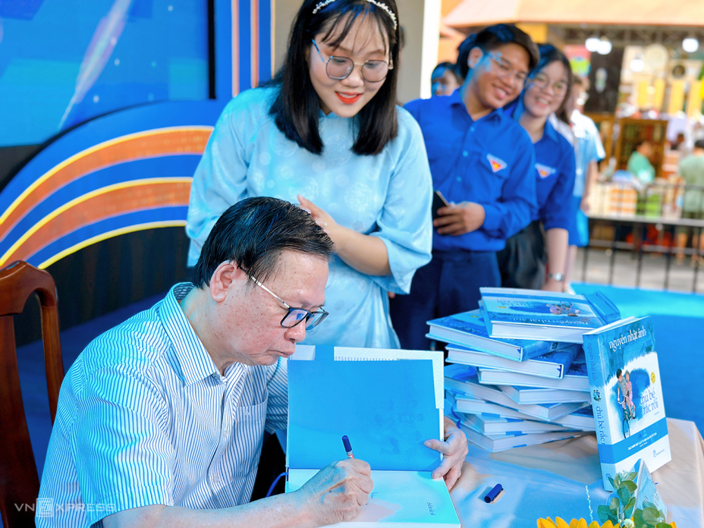

Nhà văn Nguyễn Nhật Ánh ví von việc tặng sách giả, dù cố tình hay vô ý, là cách "chia tay người yêu nhanh nhất".
Tác giả cho rằng nhiều người không nhận ra sự nghiêm trọng của nạn sách giả, sách lậu. Theo nhà văn, nhiều bạn hữu của ông mua sách sưu tầm, để lại cho con cháu như một dạng tài sản. Ông đặt trường hợp một ngày, người thân của họ phát hiện mua phải sách lậu, giá trị của bộ sưu tập đó sẽ giảm đi nhiều.
"Tôi cũng cho rằng cách chia tay người yêu nhanh nhất là tặng cho họ sách giả, nhân ngày sinh nhật chẳng hạn. Điều đó gây tổn thương lớn tới tâm hồn, tình cảm người nhận, dù có thể người tặng chỉ mua nhầm", nhà văn nói trong buổi giao lưu thuộc khuôn khổ Ngày sách và văn hóa đọc Việt Nam lần 3, sáng 21/4 tại TP HCM.

Nhà văn từng gặp nhiều tình huống oái ăm khi độc giả mua sách lậu. Trong một buổi ký tặng, ông chứng kiến có học sinh xếp hàng bốn, năm giờ dưới trời nắng, khi gặp được ông thì buồn bã nhận ra chồng sách của mình là giả. Một lần khác, giao lưu với sinh viên ở một làng đại học, ông ngỡ ngàng vì một nửa số sách họ mang đến xin chữ ký được in lậu. Một số độc giả nhỏ tuổi bật khóc khi được cho biết các em mua phải sách giả. Nguyễn Nhật Ánh nói: "Thật ra, phân biệt sách giả khá dễ. Các nhà xuất bản đã in tem chống hàng lậu phía sau, khi mua chúng ta chỉ cần lưu ý là có thể nhận ra".
Tại sự kiện, cây bút 69 tuổi còn nhận được nhiều câu hỏi về cách lấy chất liệu sáng tác suốt hơn 40 năm qua. Với ông, việc liên tục nghĩ ra các câu chuyện thú vị vốn là yếu tố bắt buộc của nghề viết. Ngoài ra, ông thường tìm cảm hứng từ ba nguồn chính: Ký ức, sự quan sát, óc tưởng tượng. Chẳng hạn, những năm đầu thập niên 1980, ông dạy môn Ngữ văn ở trường THCS Bình Tây (quận 6, TP HCM). Thời gian làm giáo viên giúp ông quan sát cách học trò sinh hoạt, đùa nghịch, từ đó viết Bàn có năm chỗ ngồi và Chú bé rắc rối - 2 truyện dài mang phong cách sáng tác đặc trưng nhất của ông về thời "nhất quỷ nhì ma".
Sau này, ông làm Chủ nhiệm câu lạc bộ thiếu niên ở quận 6, tiếp xúc với các nhóm kịch câm, múa rối, tổ chức và làm trọng tài cho các giải bóng đá mini. Trải nghiệm đó được nhà văn đưa vào cuốn Trước vòng chung kết - một trong những truyện dài nổi tiếng của Nguyễn Nhật Ánh.
Là một trong 10 đại sứ văn hóa đọc của TP HCM nhiệm kỳ 2024-2025, Nguyễn Nhật Ánh kỳ vọng lan tỏa văn hóa đọc đến thiếu niên. Theo ông, mỗi người có thể góp phần nhân rộng tình yêu sách, ví dụ cha mẹ có thể tặng sách truyện cho con vào mỗi dịp sinh nhật, ngày lễ. "Đó là cách tình yêu sách len lỏi vào đời sống một cách tự nhiên, giúp cho các em xem việc lớn lên cùng sách là điều bình thường như chuyện ăn, ngủ, vẽ, hát", Nguyễn Nhật Ánh nói
Nguyễn Nhật Ánh sinh tại Thăng Bình, Quảng Nam, từ năm 1973 vào Sài Gòn sống, theo học ngành sư phạm, tốt nghiệp năm 1976. Bên cạnh năm tập thơ, hơn 30 tập truyện tranh, 12 tập kịch bản phim, Nguyễn Nhật Ánh đã xuất bản hơn 100 tác phẩm văn xuôi đề tài thanh thiếu niên, tuổi mới lớn và thiếu nhi. Tác giả còn in ba tập bình luận thể thao và hơn 50 tập tư vấn tình yêu dưới các bút danh khác nhau. Ông được Trung tâm Sách kỷ lục Việt Nam ghi nhận là nhà văn viết cho thanh thiếu niên nhiều nhất nước.
Sách Nguyễn Nhật Ánh từng nhiều lần được chuyển thể lên màn ảnh. Năm 1994, phim Áo trắng sân trường được ra mắt, do Lê Dân đạo diễn, dựa trên truyện Nữ sinh, dàn diễn viên gồm Lê Công Tuấn Anh, Y Phụng, Ngô Mỹ Uyên. Năm 1998, phim Chú bé rắc rối dựa trên truyện cùng tên được Phùng Ngọc - diễn viên phim Đất phương Nam - đóng vai chính.
Năm 2004, phim truyền hình Kính vạn hoa ra mắt, với các diễn viên: Ngọc Trai, Tiểu Long, Anh Đào... Phim điện ảnh Tôi thấy hoa vàng trên cỏ xanh do Victor Vũ đạo diễn, ra rạp năm 2015. Tác phẩm Mắt biếc của Nguyễn Nhật Ánh cũng được đạo diễn này chuyển thể lên màn ảnh cuối năm 2019, đạt doanh thu 180 tỷ đồng. Hai tác phẩm chiếu rạp Kính vạn hoa và Ngày xưa có một chuyện tình được khởi động gần đây, dự kiến ra mắt năm nay.